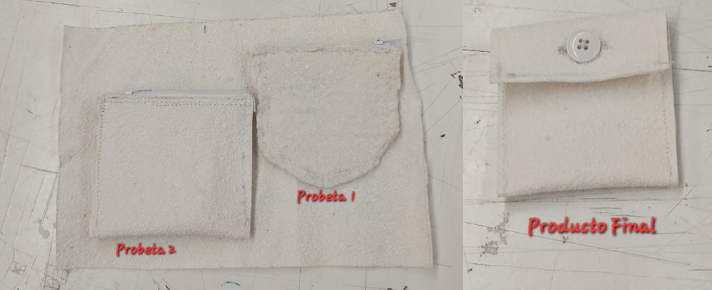

Trabajo N°1
La utilización de material mezcla para la confección de monederos y billeteras a partir de material biodegradable. En este caso, a partir de cáscara de huevo molido + maicena + glicerina, al menos en capas de 3 mm, 5 mm o más, generando un textil funcional.
